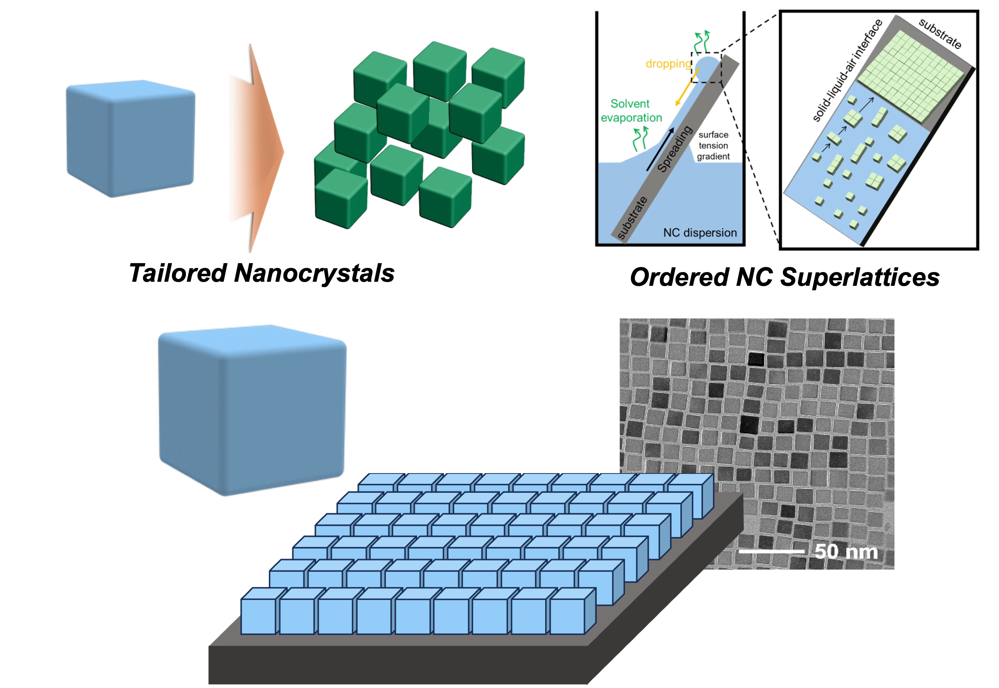
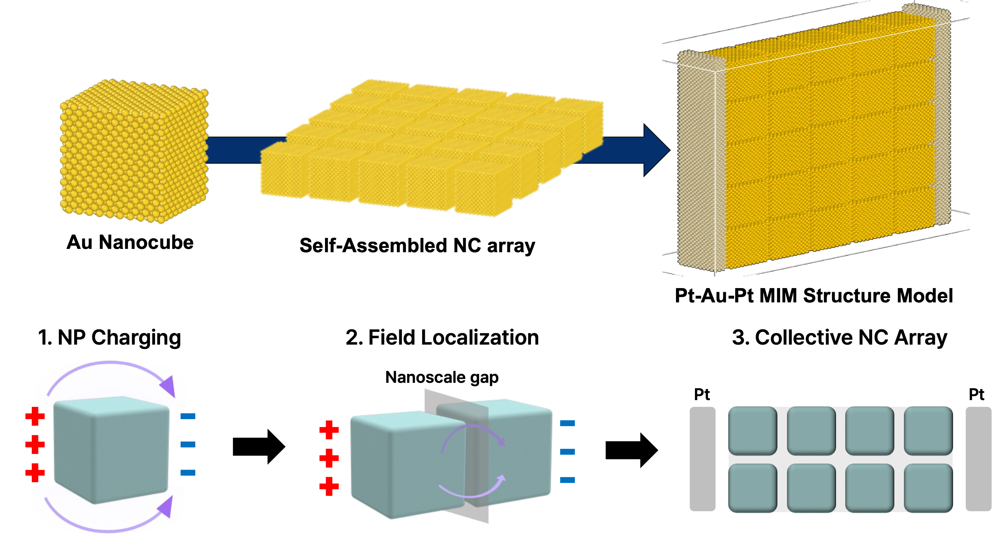

Research
Disclaimer
The research topics presented on this page are part of collaborative projects conducted
by my affiliated research group and should not be interpreted as my sole or exclusive
work. This website is intended only to showcase my research participation and
contributions.

Nanoparticle Self Assembly Modeling
Molecular dynamics models are used to investigate how nanoparticles form self-assembled structures from initially dispersed states. This work focuses on the structural evolution, stability, and ordering of nanoparticle assemblies under different interaction conditions.
Analysis of particle trajectories and assembled configurations helps clarify how local interactions between nanoparticles give rise to larger organized architectures.
Theoretical Modeling of Collective Behavior
Ordered nanoparticle assemblies can exhibit collective behavior that cannot be explained by individual particles alone. This work connects structural descriptors, such as spatial ordering and arrangement, with emergent material responses.
Simple theoretical models are developed to explain how microscopic organization in nanoparticle arrays leads to macroscopic electrochemical properties.

Dense Electrolyte Modeling
Placeholder